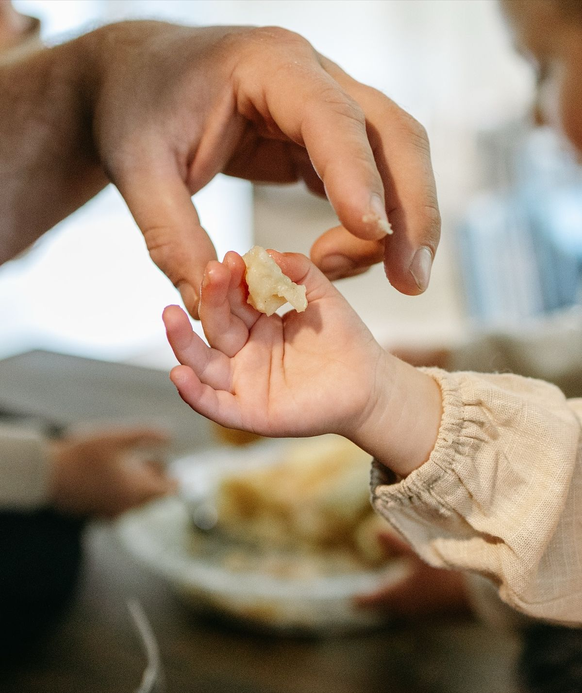
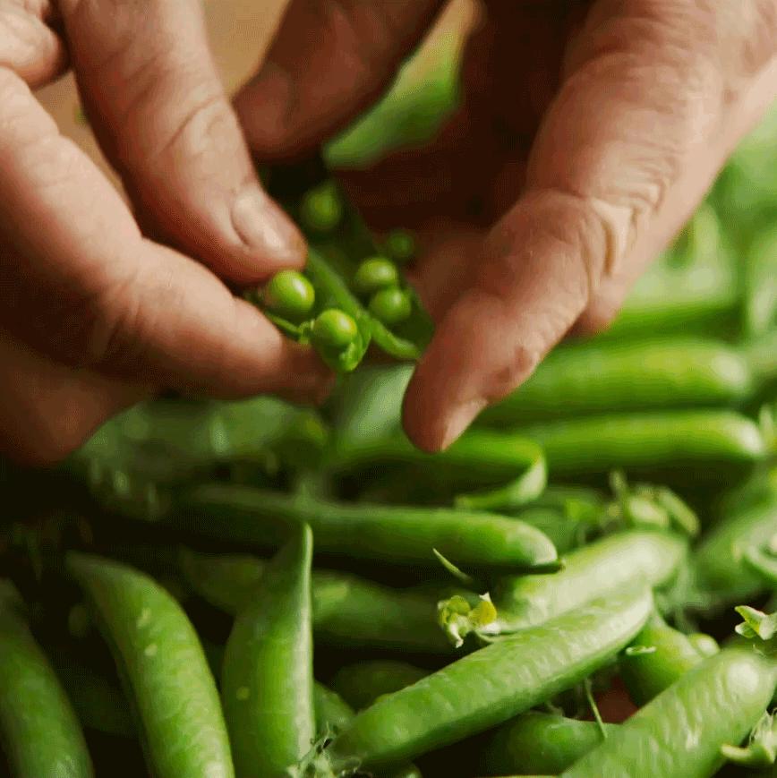
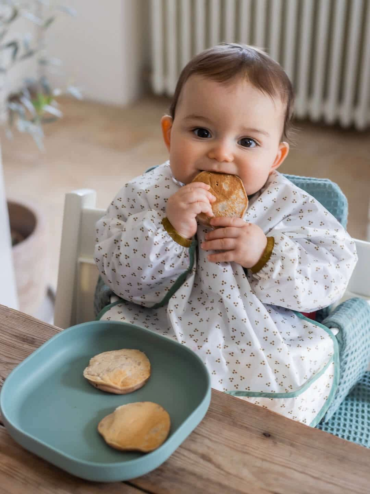
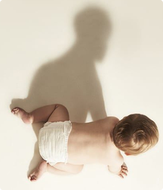
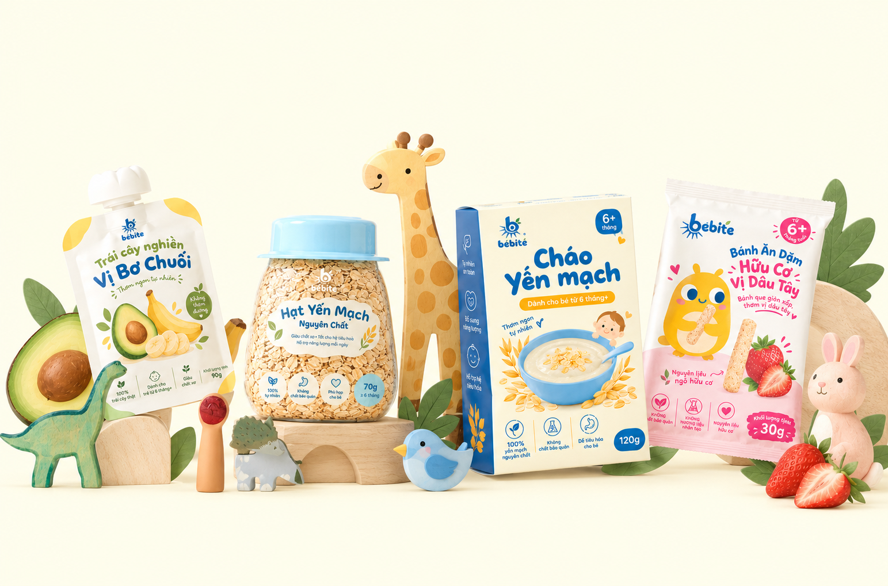
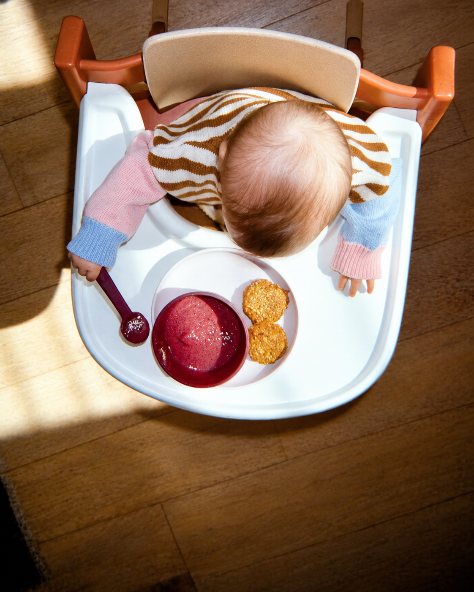

BẮT ĐẦU ĂN DẶM,
BẮT ĐẦU LỚN KHÔN
Có một khoảnh khắc rất dịu dàng trong hành trình trưởng thành của mỗi em bé: khi những thìa ăn dặm đầu tiên được đưa đến đôi môi nhỏ.
BéBite ra đời từ mong muốn biến hành trình nhỏ bé ấy thành một trải nghiệm vui vẻ, tự nhiên và đầy yêu thương cho cả bé và ba mẹ.



MỘT BỮA ĂN NHỎ
TRỞ THÀNH MỘT ĐIỀU LỚN LAO
Ăn dặm là một trong những cột mốc đầu tiên khi bé bắt đầu khám phá thế giới theo cách riêng của mình. Nhưng với ba mẹ, đó cũng là lúc xuất hiện rất nhiều câu hỏi:
Bé nên ăn gì? Ăn như thế nào? Điều gì là phù hợp với bé? Làm sao để mỗi bữa ăn vừa đủ dinh dưỡng, vừa trở thành một khoảng thời gian vui vẻ?
Từ những suy nghĩ rất thật ấy, BéBite được hình thành. Chúng mình mong muốn tạo nên những sản phẩm nhỏ bé nhưng có thể góp phần làm hành trình ăn dặm của bé trở nên nhẹ nhàng hơn.
Bởi chúng mình tin rằng, một bữa ăn ngon không chỉ nuôi dưỡng cơ thể, mà còn nuôi dưỡng những khám phá đầu tiên của bé.
NHỎ BÉ TRONG TỪNG SẢN PHẨM.
LỚN LAO TRONG TỪNG YÊU THƯƠNG.
Với BéBite, mỗi sản phẩm không chỉ đơn giản là một món ăn dành cho bé.
Đó là cách chúng mình gửi gắm sự quan tâm đến từng giai đoạn phát triển, từng khẩu vị nhỏ và từng khoảnh khắc mà ba mẹ cùng bé khám phá thế giới.
TỰ NHIÊN
Ưu tiên những nguyên liệu gần gũi, đơn giản và phù hợp với hành trình ăn dặm của bé.
DINH DƯỠNG
Mỗi sản phẩm được xây dựng với mong muốn mang đến những lựa chọn tiện lợi và cân bằng hơn cho bé.
YÊU THƯƠNG
Bởi phía sau mỗi sản phẩm luôn là mong muốn giúp ba mẹ có thêm một người bạn đồng hành trong những năm tháng đầu đời của bé.

ĐỒNG HÀNH ĐỂ BA MẸ
YÊN TÂM LỰA CHỌN.
Chúng mình không muốn biến ăn dặm thành một danh sách những điều phải nhớ. BéBite tập trung vào những điều thật sự cần thiết: nguyên liệu, dinh dưỡng và trải nghiệm của bé trong mỗi bữa ăn.
GẦN GŨI
Những điều đơn giản và tự nhiên luôn là điểm bắt đầu của BéBite.
TẬN TÂM
Mỗi sản phẩm được tạo nên từ sự quan tâm dành cho những năm tháng đầu đời của bé.
NIỀM VUI
Chúng mình tin rằng bữa ăn nên là một hành trình khám phá đầy niềm vui.
NHỮNG ĐIỀU BÉBITE
HỨA LÀM
Nói là làm
Minh bạch và trung thực trong từng thành phần công bố. Những gì Bébite cam kết trên bao bì — từ nguồn gốc nông sản lành tính, tiêu chuẩn 3 Không (không thêm đường, không muối, không chất bảo quản) — đều được hiện thực hóa trọn vẹn trong từng sản phẩm gửi đến tay con.
Sáng tạo không ngừng
Liên tục nghiên cứu các công thức dinh dưỡng chuẩn khoa học phù hợp với thể trạng trẻ em Việt, kết hợp tối ưu thiết kế thông minh (túi nắp chống hóc, định lượng vừa vặn một cữ) để hành trình ăn dặm của bé trở nên thảnh thơi, nhẹ nhàng hơn cho ba mẹ.
Nỗ lực để cống hiến
Luôn lắng nghe, thấu hiểu và đồng hành lâu dài cùng ba mẹ trên từng cột mốc khôn lớn. Bébite không chỉ mang đến sản phẩm dinh dưỡng, mà còn gửi trao giải pháp chăm sóc an lành, chung tay xây dựng thế hệ mầm non khỏe mạnh, hạnh phúc.

LỚN KHÔN TỪ
NHỮNG ĐIỀU NHỎ BÉ.
Cảm ơn ba mẹ đã để BéBite trở thành một phần trong hành trình lớn khôn của bé.
KHÁM PHÁ SẢN PHẨM